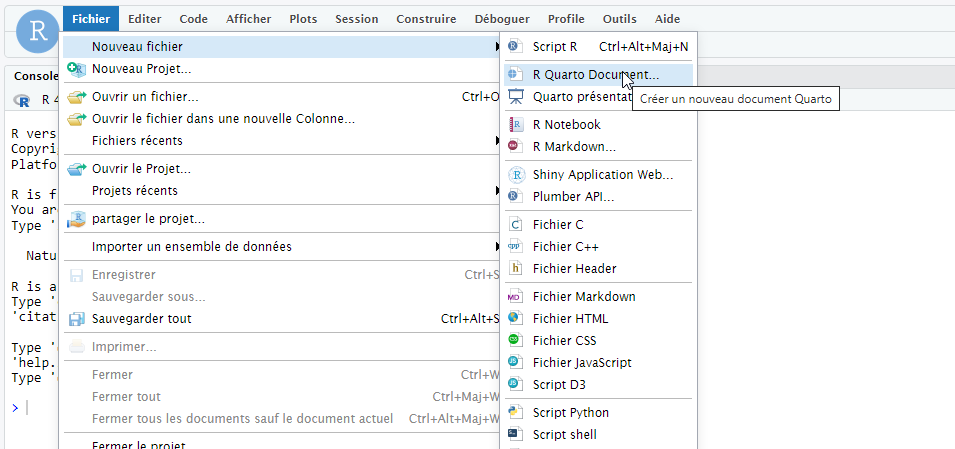
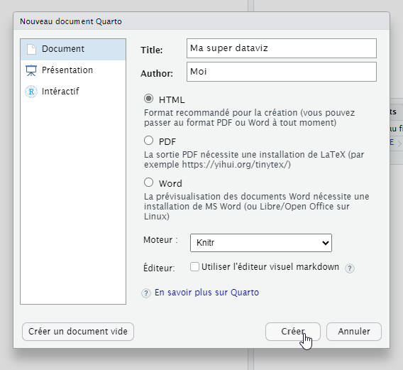
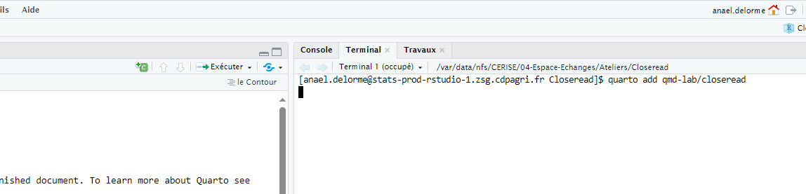
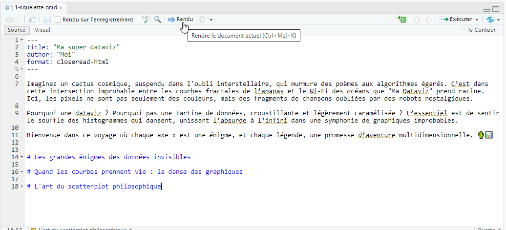

Formation CloseRead
Formation Closeread
Objectif
Créer une première dataviz en datascrollytelling sur un thème qui vous tient à coeur.
Déroulement
Selon votre niveau de connaissance en quarto/R/observable, vous pourrez vous arrêter en cours de formation. Mais vous aurez à toute étape une dataviz.
- Storyboard : Création du déroulé narratif de votre viz, avec création des textes et récupération des images/données utiles facile
- Initialisation : Création d’un document quarto et installation de closeread facile
- Squellette de la viz : Création de l’introduction/conclusion et des différentes parties de la dataviz facile
- Scroll sur images : Intégration d’images et de textes, avec le scroll qui fait apparaitre le texte et l’image correspondante facile
- Scroll sur du texte : Intégration de textes qui sera mis en évidence selon le scroll facile
- Scroll sur un graphique en R : Création de graphique qui évoluera selon le scroll intermédiaire
- Modification du thème : Changement de l’aspect de la dataviz en changeant le thème intermédiaire
- Scroll sur des graphs ou cartes Javascript : Création de cartes qui évoluent avec le scroll avandé
- Déploiement sur Github Pages : Diffusion sur Internet avec Github Pages avandé
Prérequis
- Avoir accès à RStudio ou VSCode
Storyboard - réfléchir avant de plonger
Avant de vous lancer dans la création de votre dataviz et de votre datascrollytelling dans Quarto, prenez le temps de réfléchir à l’organisation globale de votre projet. Un storyboard est un outil clé pour structurer votre récit et anticiper les étapes nécessaires à sa réalisation.
Définissez un plan clair : Identifiez les messages que vous voulez transmettre et dans quel ordre. Une narration bien pensée guidera vos lecteurs efficacement.
Préparez les éléments nécessaires : Rassemblez les données, les textes, les images, et les illustrations qui enrichiront votre présentation.
Pensez à l’interaction : Repérez les points où vous voulez mettre l’accent, zoomer sur des éléments importants ou afficher des détails spécifiques.
Visualisez vos transitions : Comment passer d’une idée à l’autre ? Ces étapes doivent être fluides pour garder l’attention de votre audience.
Un storyboard vous permettra de garder une vue d’ensemble tout en anticipant les défis techniques et narratifs. Cette préparation est essentielle pour maximiser l’impact de votre datascrollytelling !
Initialisation facile
CloseRead est une extension conçue pour fonctionner avec Quarto. Avant de commencer, assurez-vous que votre environnement de travail est prêt :
Ouvrez RStudio : Lancez RStudio, l’environnement idéal pour travailler avec Quarto.
Créez un projet dédié : Il est recommandé de créer un nouveau projet pour organiser vos fichiers. Cela facilitera la gestion des ressources et des dépendances.
Créez un document Quarto : Générez un premier fichier .qmd (Quarto Markdown), qui servira de base à votre projet de datascrollytelling. Pour ce faire, utilisez l’option Fichier > Nouveau fichier > Quarto Document dans RStudio.  Puis remplissez les différents paramètres (décocher l’éditeur visuel) 
Installez l’extension CloseRead : À la racine de votre projet (là où se trouve votre fichier .qmd), installez l’extension CloseRead. Cela permettra d’ajouter les fonctionnalités nécessaires à votre projet. Cela se passe dans le terminal à droite de la console. 
quarto add qmd-lab/closereadSi vous êtes sur Cerise, il n’est pas possible d’installer l’extension. Pour contourner cette difficulté, récupérer le fichier _extensions.zip que vous trouverez sur CERISE/04-Espace-Echanges/Ateliers/Closeread et Téléchargez-le à la racine de votre projet. Le fichier sera automatiquement décompressé et l’extension sera active.
Une fois ces étapes terminées, vous serez prêt à explorer les possibilités offertes par CloseRead pour enrichir vos visualisations et votre storytelling.
Squelette de la viz facile
Vous pouvez commencer à créer un première squelette de dataviz :
- Paramétrage de l’entête YAML
Il faut indiquer que le format est closeread-html
---
title: Ma dataviz
Author: Moi
format: closeread-html
---Ajoutez votre texte d’introduction
Ajoutez vos différents titres
Un titre de niveau 1 est précédé d’un #, un titre de niveau 2 de deux ##, etc…
- Vérifiez que tout fonctionne
En cliquant sur le bouton Rendu, le quarto va générer une page web au format html.

En lançant le Rendu il vous sera demandé de sauvegarder le fichier .qmd au préalable
Vous pouvez consulter le fichier d’exemple ici : 1-squelette
Scroll sur images facile
Etape 1 - chargement des textes et des images
Pour comprendre le fonctionnement, très simple, de closeread, ajoutez des images et du texte dans une de vos parties.
créez un répertoire
imgdans votre projettéléchargez vos photos
dans votre .qmd ajoutez les photos et les textes en les alternant
Une photo s’ajoute très simplement avec le code 
Vous pouvez tester un rendu pour vérifier que les images et le texte s’affichent correctement.
Etape 2 - ajout d’une section closeread
Vous pouvez passer à l’animation de votre page avec closeread. Le principe est de faire défiler les textes par dessus les images, avec les images qui vont changer selon le niveau de scroll.
Vous devez indiquer à votre document .qmd que vous souhaitez ajouter une section closeread. Englobez votre texte et vos images par la balise ouvrante ::::{.cr-section} et la balise fermante ::::.
Voici mon code :
# Les grandes énigmes des données invisibles
::::{.cr-section}

**L'énigme flottante des données invisibles**
Les chiffres chuchotent leurs secrets aux angles invisibles d'une géométrie oubliée. Saurons-nous un jour entendre leurs vérités non-numériques ?

**Le labyrinthe des connexions furtives**
Chaque pixel est une porte, mais laquelle mène au sommet du triangle imaginaire ? Une énigme pour les esprits quantiques.

**L'éclipse des données perdues**
Quand les graphiques se camouflent dans les ombres des spectres, seule une poignée de courbes revient. Les autres ? Elles errent entre deux dimensions.
::::
Vous pouvez tester un rendu pour vérifier que les images et le texte s’affichent dans une section closeread. Vous noterez que tout défile à gauche. En effet nous n’avons pas spécifié les éléments à mettre en défilement et les éléments à mettre en arrière plan.
Etape 3 - choix des éléments de défilement et d’arrière plan
Dans notre exemple, les textes sont en défilement et les images viennent en arrière plan les unes après les autres.
L’élément qui ne bouge pas (un sticky en closeread) est encadré par une balise préfixé par #cr-. Par exemple, la balise ouvrante est :::{#cr-monImage1} et la fermante est :::.
L’élement qui bouge (un trigger) est suivi de l’appel de ce sticky sous la forme @cr-monImage1.
Voici le code final avec 3 images :
::::{.cr-section}
:::{#cr-image1}

:::
**L'énigme flottante des données invisibles**
Les chiffres chuchotent leurs secrets aux angles invisibles d'une géométrie oubliée. Saurons-nous un jour entendre leurs vérités non-numériques ? @cr-image1
:::{#cr-image2}

:::
**Le labyrinthe des connexions furtives**
Chaque pixel est une porte, mais laquelle mène au sommet du triangle imaginaire ? Une énigme pour les esprits quantiques. @cr-image2
:::{#cr-image3}

:::
**L'éclipse des données perdues**
Quand les graphiques se camouflent dans les ombres des spectres, seule une poignée de courbes revient. Les autres ? Elles errent entre deux dimensions. @cr-image3
::::
Vous pouvez tester un rendu pour vérifier que le texte scrolle correctement et que l’image s’affiche bien.
Vous pouvez consulter le fichier d’exemple ici : 2-scroll_image